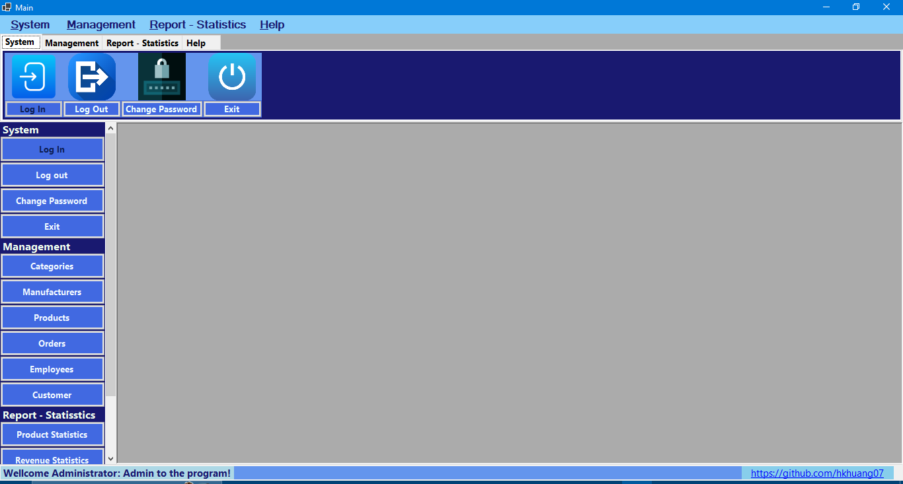

Welcome to the detailed guide on using the Main Interface of **HK.Huang Sales Management Software**. This interface is the control center where you can access all functions and manage your business operations efficiently. This guide will help you understand each component and how to interact with them.
Main Interface Overview
The main interface is designed to be intuitive, providing an overall view of the software's key modules. Please refer to the image below for a clearer visualization of the layout and location of the components:

Image: Main interface after successful login.
Account and Session Management
1. Logging into the system (mnuLogIn_Click, LogIn())
When starting the software, you will be prompted to log in. This process ensures data security and access control:
- Initialize and Display Login Form: The software will automatically display the login form (frmLogin) upon startup.
- Enter Information: You need to enter your Username and Password into the corresponding fields.
- Information Check: The system will verify:
- Username and password cannot be left blank.
- Username must exist in the system.
- Password must match the encrypted password of that account (using BCrypt for security).
- Notifications and Authorization:
- If the login information is incorrect, an error message will be displayed (e.g., "Incorrect login name!" or "Incorrect password!"). You will be asked to re-enter.
- If login is successful, you will receive a welcome message ("Wellcome [Username] !").
- The system will automatically assign access rights based on the user's role (Administrator or Member) and enable/disable corresponding functions on the interface.
- The logged-in username will be displayed on the Status Bar of the main interface.
2. Logging out of the system (mnuLogout_Click, NotLoggedIn())
To ensure data security and end your session, you can log out:
- Confirm Logout: When you select the Logout function, a confirmation dialog will appear asking if you want to log out.
- Close Child Forms: If any child windows (MDI children) are open, they will be automatically closed.
- Restore State: The main interface will revert to the "not logged in" state (NotLoggedIn()), disabling most functions and reactivating the Login button.
3. Change Password (mnuChangePass_Click)
You can change your password to enhance security:
- Login Required: This function is only available when you are logged in. If not, the system will warn you.
- Open Change Password Form: A new window (frmChangePass) will appear, allowing you to enter your old password and set a new one.
- Specify User: The change password form will automatically recognize the current user's account to perform the change.
Data Management (Backup & Restore)
The software provides important tools for data backup and recovery, ensuring the safety and integrity of business information.
1. Data Backup (mnuBackup_Click)
Regular data backup is crucial to prevent data loss due to unexpected incidents:
- Select Folder: A dialog box will appear asking you to choose a folder on your computer to store the backup file (.bak).
- Backup Process: The system will perform the backup of the current database to the selected file.
- Result Notification: Upon completion, you will receive a "Data backup successful!" or "Data backup failed!" message depending on the outcome.
2. Data Recovery (mnuRestore_Click)
This function allows you to restore data from a previous backup, useful when you need to revert to a specific data state or troubleshoot issues:
- Select Backup File: A dialog box will open for you to select the backup file (.bak) you want to restore.
- Recovery Process: The system will proceed to restore the database from the selected file. Note: This process will OVERWRITE current data, so please ensure you have backed up your current data if needed.
- Result Notification: Upon completion, you will receive a "Data recovery successful!" or "Data recovery failed!!".
Important Warning: Always back up your current data before performing a recovery operation to avoid unintended data loss.
Key Management Functions
The main interface provides menu items and quick access buttons to various management modules of the software. Depending on the user's permissions (Administrator or Member), some functions may be disabled.
1. Sales (mnuSale_Click)
- Access: Opens the frmSale window.
- Description: This is the main module for performing sales transactions, creating invoices, selecting products, and processing payments.
2. Category Management (mnuCategories_Click)
- Access: Opens the frmCategories window.
- Description: Allows managing product categories (add, edit, delete categories). For Administrator only.
3. Manufacturer Management (mnuManufacturers_Click)
- Access: Opens the frmManufacturers window.
- Description: Allows managing product manufacturer information (add, edit, delete). For Administrator only.
4. Product Management (mnuProducts_Click)
- Access: Opens the frmProducts window.
- Description: Manages detailed product information in stock: add new, edit information, update inventory quantity.
5. Customer Management (mnuCustomers_Click)
- Access: Opens the frmCustomers window.
- Description: Manages customer information, including adding new customers, updating contact information, and purchase history.
6. Employee Management (mnuEmployees_Click)
- Access: Opens the frmEmployees window.
- Description: Manages accounts, information, roles, and permissions of employees in the system. For Administrator only.
7. Order Management (mnuOrders_Click)
- Access: Opens the frmOrders window.
- Description: View and manage all created orders, including order status and details of purchased items.
Tip: Each time you open a child form (e.g., Sale, Products, Customers...), if that form is already open, the system will bring it to the front instead of opening a new window, helping to manage the workspace more efficiently.
Reports & Statistics
Reporting and statistics functions help you gain an overview of business performance.
1. Product Statistics (mnuProductStatistics_Click)
- Access: Opens the frmProductStatistics window.
- Description: Provides reports and charts on product performance, such as best-selling products, inventory products, etc. For Administrator only.
2. Revenue Statistics (mnuRevenueStatistics_Click)
- Access: Opens the frmRevenueStatistics window.
- Description: Provides reports on revenue and profit over time, helping with financial analysis. For Administrator only.
Help & Information
1. Software Information (mnuSoftwareInformation_Click)
- Access: Opens the AboutBox window.
- Description: Displays detailed information about the software version, developer, copyright, etc.
2. User Guide (mnuUserGuide_Click)
- Access: Opens a web browser and navigates to the main user guide page (`index.html` in your HelpURL directory).
- Description: This is the access point to the entire software user manual, helping you find information about all functions.
3. Link to Developer (lblLink_Click)
- Access: Opens a web browser and navigates to the developer's GitHub page (https://github.com/hkhuang07).
- Description: Provides a quick link to the developer's profile to view more projects or contact.
Exit Application (mnuExit_Click)
To completely exit the software:
- Confirm Exit: A confirmation dialog will ask if you want to exit the program.
- Close Application: If confirmed, the application will close.
Note on User Permissions:
HK.Huang Sales Management Software clearly distinguishes permissions between
Administrator and
Member.
- Administrator: Has full access to all management functions (Categories, Manufacturers, Employees, Product Statistics, Revenue Statistics) and data management tasks (Backup, Restore).
- Member: Only has access to functions necessary for daily work such as Sales, Product Management, Customer Management, Order Management. Administrative and statistical functions are disabled to ensure security and task assignment.
Please check the status bar or menu items/buttons to see which functions are enabled based on your account's role.